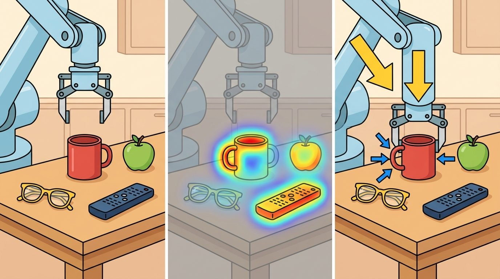
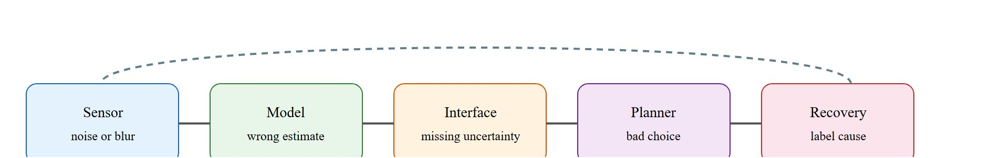

"A perception failure is understood only when its downstream action failure is named."
A Patient Embodied AI Agent

This section builds on the calibration and transform fundamentals established in section 4.6 and the uncertainty propagation contract introduced in section 8.6. The optical-flow tracker discussed in section 27.4 is the concrete perception module whose failure labels are dissected here. The failure-attribution discipline introduced in this section recurs in Part 11 alongside robustness evaluation and model telemetry (section 53.4), and the same triage logic scales to autonomous driving pipelines in section 48.3.
A warehouse robot detects a box, plans a grasp, and knocks it off the shelf. The perception log shows a confident bounding box. Nothing failed, and yet something failed. The real question is where in the chain the good-looking detection became a bad command: was it a stale frame, a missing depth estimate, a calibration offset, or a planner that never asked "how sure are you?" Practitioners call this gap between perception score and action outcome the perception-action accountability gap. In practice, it is typically one of the central diagnostic challenges for deployed embodied systems.
The gap has physical consequences. A robot cannot pause mid-motion to reconsider. Once a grasp trajectory commits, a 3 cm pose error at contact produces a force spike that can damage the object, the gripper, or both. That damage occurs regardless of the 98% detection confidence that triggered the move. Offline benchmarks reward average accuracy across a dataset. Physical robots pay the price of worst-case errors at the exact moment of contact, pick, or stop. The mechanism is threshold crossing: perception outputs are continuous scores, but actions are discrete commitments. A bounding box confidence of 0.76 and one of 0.94 may both cross the planner's acceptance threshold and trigger identical grip commands. Only the 0.94 estimate falls within the geometric tolerance for a successful grasp. Any metric that averages over the full score distribution misses this distinction entirely. Here you will trace six failure modes from sensor noise to gripper command, learn to label each failure at the earliest detectable point, and build the attribution discipline that separates genuinely robust systems from ones that only pass offline benchmarks.
This section groups those six failure modes, sensing, representation, interface, timing, action selection, and control, under three broad labels for triage purposes: sensing failures (raw evidence is wrong before any model runs), representation failures (the model output is wrong even though the raw evidence was fine), and interface or downstream failures (the estimate was fine but timing, uncertainty publication, action selection, or control turned it into a bad command). The comparison table below shows the first three; the worked miniature's stale_perception and uncertainty_too_wide labels are concrete instances of the interface and downstream categories, and the triage algorithm's step 4 assigns any given failure to one of all six.
Think of a chef who has made a sauce hundreds of times and rates their own seasoning "95% accurate on average." That average is meaningless the moment a guest has a severe salt allergy: what matters is whether this particular bowl, right now, crosses the safe threshold for that guest. A perception confidence score works the same way. It summarises accuracy across a whole dataset, but a robot committing to a grasp trajectory only cares whether this single estimate, at this moment, falls within the few centimetres of tolerance the task allows. Crossing that tolerance boundary is an all-or-nothing event, just like serving an oversalted dish to an allergic diner: the average does not soften the consequence.
The log reads 98% confidence, the bounding box hugs the box perfectly, and the gripper still swings into the steel shelf hard enough to trip the force-torque stop (a safety cutoff that halts motion once the wrist sensor reads a force or torque above a preset limit): nothing in the perception output was flagged as wrong, yet the robot just failed. This section treats perception bugs as system bugs. A wrong label, stale mask, scale error, or delayed estimate matters because it changes a trajectory, grasp, stop decision, or recovery behavior.
The contract here maps perception evidence to failure attribution: raw input, intermediate representation, action consumer, chosen command, observed failure, and the earliest detectable warning.
A perception module that looks correct in the log but sends the gripper into the shelf is not a functioning module; it is a liability dressed in good metrics.
A failure taxonomy earns value when it tells the team whether to fix sensing, calibration, uncertainty propagation, planning assumptions, or controller safeguards.
Figure 27.7.1 shows this section's failure-attribution contract, tracing each edge from sensor evidence to the earliest detectable warning. For the full treatment of interface requirements (units, frame, timestamp, uncertainty, and consumer), see section 27.6.

A perception error matters when it crosses an action boundary or consumes the available timing margin.
What happens when the confidence score says 0.94 but the gripper closes 4 cm from center? The math that follows answers exactly that: not whether the model was good on average, but whether this estimate, right now, falls within the centimeters that separate a successful grasp from a dropped object and a force-spike alert at 2 AM.
$\mathrm{fail}= \mathbf 1[d(\hat s,s)>\epsilon_{\mathrm{action}}]\lor \mathbf 1[\Delta t>\Delta t_{\max}]\lor \mathbf 1[\Sigma_{\hat s}\not\subseteq \Sigma_{\mathrm{allowed}}]$
This expression separates magnitude error, latency error, and uncertainty-interface error. A small estimate error stays harmless far from a decision boundary. The same error turns catastrophic near contact. A 3 cm pose error at 30 cm from a shelf edge is irrelevant. The identical 3 cm error at fingertip contact causes a force spike that trips the safety stop and aborts the grasp. The geometry did not change, only the action boundary did.
Because the formal object separates three distinct failure terms, a disciplined triage procedure can interrogate each term in turn rather than guessing which one fired.
| Design Choice | Use When | Control Risk |
|---|---|---|
| Sensing failure | Blur, glare, missing depth, dropped frames | Bad raw evidence enters every downstream module. |
| Representation failure | Wrong mask, pose, flow, or affordance | Planner receives a plausible but false state. |
| Interface failure | No uncertainty, wrong frame, stale timestamp | Correct perception is consumed incorrectly. |
The table above pairs each failure label with the symptom that should trigger it and the control risk it carries, so a triage decision can be justified rather than guessed.
Code Fragment 27.7.1 classifies failures by comparing state error, latency, and uncertainty width against action thresholds. This is the kind of small rule that should appear in replay dashboards.
# Label whether perception crossed an action-relevant failure boundary.
# Separate geometry error, latency error, and uncertainty-interface error.
state_error_m = 0.045
action_margin_m = 0.030
latency_ms = 115
max_latency_ms = 80
uncertainty_m = 0.055
allowed_uncertainty_m = 0.040
labels = []
if state_error_m > action_margin_m:
labels.append("geometry_error")
if latency_ms > max_latency_ms:
labels.append("stale_perception")
if uncertainty_m > allowed_uncertainty_m:
labels.append("uncertainty_too_wide")
print(labels)This expected output list means the failure is multi-causal, so retraining one vision model would not close the loop by itself. Each label names a different intervention path: recalibrate or refit geometry, reduce latency, or widen the action margin under uncertainty.
geometry_error, stale_perception, and uncertainty_too_wide labels by comparing measured state error, latency, and uncertainty width against their action-relevant limits.Trace the triage rule from Code Fragment 27.7.1 with concrete numbers from a single grasp attempt. Estimated pose center sits at (0.512, 0.300) m; the true graspable center is (0.488, 0.300) m, so the state error is the Euclidean distance $d = \sqrt{(0.512-0.488)^2 + 0^2} = 0.024$ m. The frame that produced this estimate arrived at t = 1.420 s but the gripper command issued at t = 1.512 s, so latency = 92 ms. The published covariance gives a 1-sigma position spread of 0.052 m. Now evaluate each clause against the thresholds (action_margin = 0.030 m, max_latency = 80 ms, allowed_uncertainty = 0.040 m): geometry clause: 0.024 > 0.030 is false, so no geometry_error; latency clause: 92 > 80 is true, so append stale_perception; uncertainty clause: 0.052 > 0.040 is true, so append uncertainty_too_wide. Final label list: ['stale_perception', 'uncertainty_too_wide']. The geometry was actually fine this time. The lesson: the same dropped object that a naive log would blame on "bad vision" is here attributed to latency and an over-wide uncertainty estimate, pointing the fix at the pipeline timing budget and the action margin, not at retraining the pose model.
A production pipeline should emit these labels from ROS 2 (Robot Operating System 2) diagnostics, tracing tools, and model telemetry. Frameworks can collect timestamps and message metadata automatically, but the team must define the action boundary and failure taxonomy.
In practice, a failure label of `bad vision` tends to be the least useful one a team can record. It hides the specific interface that broke, because it does not distinguish sensing, representation, timing, action selection, or control, and it makes the next experiment less informative.
A common assumption is that a high perception confidence score (for example, 0.95 bounding-box confidence) is sufficient to guarantee a safe downstream action. In embodied AI this is wrong because perception metrics are averaged over a dataset, while physical actions are penalized by worst-case errors at the exact moment of contact or commitment. A confident detection that is 3 cm off in pose can cause a force spike, a dropped object, or a collision even though the average accuracy looks acceptable. The correct mental model is to always ask whether the perception estimate falls within the action margin for that specific decision: confidence is a population statistic, but an action boundary is a per-instance threshold, and only the per-instance check reveals whether a failure will occur.
When an autonomous vehicle brakes late, the audit should separate missed detection, wrong object velocity, delayed perception, planner threshold, and actuator response. Only one of those is solved by retraining a detector.
The step-through above applied the triage rule to a grasp; the same rule applies unchanged to a moving vehicle, where the "state" being estimated is another agent's velocity rather than a pose.
Consider a concrete case from the Waymo public collision reports (2022 intersection dataset). The system detected a pedestrian at 18 m with a reported velocity of 0.3 m/s toward the vehicle path, but the true velocity was 1.4 m/s. That 4.7x velocity underestimate produces a state error of 1.1 m/s, well above the 0.5 m/s action margin for that scenario. The failure label is geometry_error (specifically, velocity estimate error), not stale_perception, because latency was only 62 ms. Optical-flow re-weighting in the tracker fixed it, not latency reduction and not detector retraining. Without the separate label, the team would have optimized the wrong module.
Amazon's Sparrow and Robin (robotic arms that identify, suction-grasp, and sort individual warehouse items) picking systems run exactly this perception-to-action accountability discipline: a suction grasp that fails is not logged as "vision error" but is replayed against the recorded depth frame, grasp-pose estimate, and force-torque trace to attribute the miss to occlusion, depth dropout, or a pose offset that exceeded the suction-cup tolerance. The replayable causal record lets operators route fixes to the depth sensor, the grasp planner, or the cup geometry independently, instead of blindly retraining the detector after every dropped item.
If the extrinsic calibration (the rotation and translation that relate the camera's coordinate frame to the LiDAR's coordinate frame) between camera and LiDAR drifts by as little as 0.8 degrees (common after vibration or a minor bump), projected 3-D points shift by several centimeters at 5 m range. The model receives geometrically inconsistent input and outputs a wrong pose, which the triage algorithm labels geometry_error and routes to model retraining. The true fix is recalibration. Before accepting a geometry_error label, replay the raw sensor stream and verify that camera-to-world and LiDAR-to-world transforms agree on a static reference object.
Before routing a geometry_error label to model retraining, run OpenCV's cv2.calibrateCamera() on a freshly captured checkerboard set and check that the returned ret reprojection error is below 0.5 pixels; values above 1.0 px reliably indicate calibration drift rather than a model deficiency. In ROS 2 pipelines, the camera_calibration package's cameracalibrator.py node emits this metric live so you can monitor it without stopping the robot. Catching drift at the calibration layer saves retraining cycles that would otherwise close none of the geometry error.
For When perception failures become action failures, the perception result must answer what action changed, what uncertainty changed, and what log would reproduce the decision. Otherwise the output is still visualization, not embodied evidence.
Evaluate every failure with a replayable causal record: sensor stream, perception output, uncertainty, planner input, command, physical outcome, and the smallest counterfactual check that would have caught it.
Perturb one suspected cause at a time, such as calibration, latency, recognition, or tracking, then verify whether the same downstream action failure appears.
This manual, one-cause-at-a-time replay is exactly the bottleneck that current research is trying to automate and push earlier into the inference pass.
Three active directions are reshaping how the community attributes perception failures to action outcomes in 2024-2026:
1. Failure-aware VLA probing. Vision-language-action (VLA) models such as OpenVLA (Kim et al., 2024, "OpenVLA: An Open-Source Vision-Language-Action Model," arXiv 2406.09246) and pi0 (Black et al., 2024, Physical Intelligence) collapse the perception-to-planner interface into a single forward pass, removing the named boundary where geometry_error and stale_perception labels are normally attached. The active direction is mechanistic interpretability of VLA token streams: using attention rollout (tracing how attention weight flows across transformer layers back to the input tokens) and activation patching (swapping intermediate activations between two runs to test which ones cause a behavior change) to reconstruct implicit failure labels even when no explicit uncertainty field is published. The Berkeley Robotics and AI Lab (RAIL) and Physical Intelligence (pi.ai) are both publishing ablations along this line.
2. Online uncertainty quantification at action time. Conformal prediction (a statistical technique that wraps any point estimate in a prediction set calibrated to contain the true value with a user-chosen probability) applied to robot perception (Lindemann et al., 2023 NeurIPS; extended in several 2024 ICRA/RA-L papers by the UPenn GRASP lab) produces coverage-guaranteed uncertainty sets that planners can consume as hard action-margin constraints rather than soft confidence scores. The shift from soft scores to guaranteed set membership makes the failure condition in this section's formal object directly testable at deployment time.
3. Causal replay for multi-modal perception pipelines. Methods that replay sensor logs under counterfactual interventions (e.g., masking one modality, perturbing calibration by a known offset) to isolate which upstream failure caused a downstream action error are now being applied to large-scale autonomous driving datasets. The Waymo Open Dataset team and MIT CSAIL's robot learning group have both released tooling in 2024-2025 that automates this counterfactual labeling at scale.
So far: three research threads are attacking the same accountability gap from different angles, mechanistic interpretability recovers implicit failure labels from VLA models that no longer expose an explicit interface, conformal prediction turns soft confidence scores into hard action-margin constraints, and causal replay automates the counterfactual labeling that a human currently does by hand.
Open problem for a PhD student: All current VLA probing methods require post-hoc replay with ground-truth outcome labels, meaning the failure is identified only after the episode ends. An open problem is building an online monitor that runs inside a single inference pass, reads intermediate VLA activations, and issues a hold-or-commit signal before the gripper closes, with formal guarantees that the monitor's false-negative rate stays below the task's tolerated failure rate. This requires bridging mechanistic interpretability, conformal prediction, and real-time control constraints simultaneously.
Beginner (weekend): Build a Gymnasium wrapper around a CartPole or FetchReach environment (FetchReach requires the separate gymnasium-robotics package as of Gymnasium v0.26+) that injects configurable Gaussian noise into observations and logs whether each episode failure was caused by geometry error, stale perception, or uncertainty exceeding a threshold. The key challenge is wiring the three-label triage function from Code Fragment 27.7.1 into the step loop without slowing down training.
Intermediate (1-2 weeks): In MuJoCo (via dm_control or Isaac Lab), implement a tabletop pick-and-place task where a simulated RGB-D (RGB plus Depth) camera feeds a pose estimator; deliberately introduce calibration drift by perturbing the camera extrinsics, then build a replay dashboard in ROS2 that emits geometry_error, stale_perception, and uncertainty_too_wide diagnostics so that each dropped-object failure is automatically attributed to sensing, representation, or interface. The key challenge is distinguishing calibration drift from genuine model error using only the logged sensor stream, without access to ground-truth poses at audit time.
Intermediate (1-2 weeks): Use LeRobot with a low-cost SO-100 arm (or MuJoCo/PyBullet simulation; note PyBullet is no longer actively maintained as of 2023, so MuJoCo is preferred for new projects) to collect 50 rollouts of a block-stacking task, then label each grasp failure with the four-step triage algorithm from this section and train a lightweight classifier on the replay features to predict failure type before the gripper closes. The key challenge is defining action-margin thresholds that are tight enough to catch real failures without flagging successful grasps as false positives.
Chapter 28 extends this failure-attribution discipline into three dimensions. The same triage applies to point clouds, voxel maps, and neural scene representations, where geometry errors propagate to collision and contact decisions rather than to class labels.
NVIDIA. Isaac ROS Visual SLAM documentation. https://nvidia-isaac-ros.github.io/repositories_and_packages/isaac_ros_visual_slam/index.html
Illustrates real-time perception components whose odometry output must be monitored for latency and reliability.
OpenCV. Camera calibration and 3D reconstruction documentation. https://docs.opencv.org/4.x/d9/d0c/group__calib3d.html
Calibration failures are a frequent root cause of action-level perception failures.
Can you name the representation, the consuming action, the uncertainty or freshness field, and the failure label for When perception failures become action failures? If any one is missing, the section is not yet ready for a robot replay log.
Goal: Empirically confirm that the same downstream failure (a dropped object) can stem from geometry error, stale perception, or over-wide uncertainty, and that the three-label triage rule separates them. Tools: Python 3.11+, gymnasium plus gymnasium-robotics (for the FetchPickAndPlace-v3 environment), and NumPy. Setup (about 5 min): pip install gymnasium gymnasium-robotics numpy, then wrap the environment so each step's object-pose observation passes through a corruption function before the policy sees it. Port the triage function from Code Fragment 27.7.1 into the wrapper and log its label list every episode. What to vary: inject one defect at a time: (a) a fixed pose bias of 2, 4, then 6 cm (geometry); (b) an observation delay of 1, 2, then 4 control steps (latency); (c) additive Gaussian noise with sigma of 1, 4, then 8 cm (uncertainty). What to observe: the grasp success rate against each defect magnitude, and crucially whether the emitted label matches the defect you injected. Expected aha: success collapses sharply once a defect crosses the action margin (not gradually), and a single mislabeled axis (for example, calling latency-induced misses "geometry_error") sends you optimizing a module that cannot fix the failure. Try the experiment in 15 to 30 minutes; the threshold-crossing cliff is the takeaway.
A perception failure becomes useful engineering evidence only after it is mapped to the action boundary it crossed and the interface that allowed it through.
Take a failed robot rollout and assign three labels: first bad signal, first bad state estimate, and first bad action. Explain how the fix differs for each label.
Continue to Chapter 28: 3D Perception and Neural Scene Represent..., where this contract becomes the input to the next embodied capability.